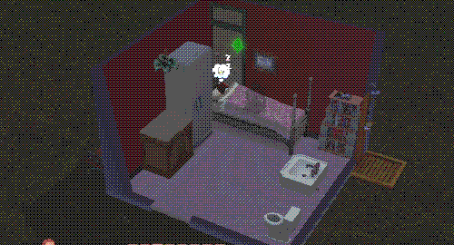

Sims 3 Legacy challenge! ... whenever I get around to it, anyway.
Sims 3 Legacy Challenge
I really wanted to return back to Sims 3 after my laptop nuke also nuked all of
my Sims 4 mods. I grew up on both Sims 3 and Sims 2, and after a poll on my tumblr,
people chose for me to do 3! SO ... here I am for 10 generations of chaos! I'm going
pretty simple and vanilla based off
the original legacy challenges.
Generation One
Completely randomized sim traits and appearance to begin with for the Fun of it; her
name is Dianna Faulkner, and she's a hopeless romantic, mooch, loves the heat,
supernatural fan, and ... shy. Which you can imagine made for a great (/s) time in
befriending others
Lifetime aspiration is
Blog Artist, and she was pretty much already a smartphone addict from the very beginning
... who broke her phone in the first 3 minutes of playing
Got a spa receptionist job (properly this time), and is now blogging about her (very
minimal love life) while living off the gym showers and snacks from the fridge at home

... attempting to date has not been going well (the nraas mod I had was set up to
be super fast with getting people together, so by the time I tweaked the
settings ... almost everyone was married or engaged)
Dumpster diving is giving some decent stuff, including a broken cookie maker, a rug
(which I sold, it's ugly), a couch, and a community bench (fortune cookie machine sold
for a lot since I got a script to be able to fix items from dumpsters)
Can't buy a husband though
Swapped to investigator job, but it's hard ... girl is doing her best but one of the
cases she was on, the guy would just not leave his house and
for days I couldn't even finish the case (did you know later on he
became the most deadbeat dad that never paid child support? Unsurprising)
There is one guy that she did begin wooing by the name of Clark Pincher-Peddler (engaged
man but again, kinda have to double-dip; funny how low his relationship with his engaged
wife is versus Dianna) but the day he was invited over for a date ... he came with a
toddler he was babysitting. No woohoo ...
... though eventually they did get together. Little did I know he had the traits of
evil, easily impressed, inappropriate, frugal, and kleptomanic. The only real evil
things he did was troll people online and sometimes scare Dianna
Albeit Clark was older, and turning into an elder well before her as she was an adult,
they had a kid together by the name of Vanessa
Although living was very meager, with a single toy for her and two books to be read to,
she grew up perfectly potty-trained and able to talk and walk, with A grades in both
schools, and with a love of the outdoors, fishing, cooking, and being easily impressed
I should've randomized her traits as well, but I ended up not doing that
Clark lived to be around 110 days old before he passed on, leaving his rusty truck to
Dianna. He ended up passing in his sleep, with Vanessa home and Dianna at work
Dianna ended up going into a cooking job to help with income while Vanessa is at school
... and she managed to get a date with a boy at her school who loves the outdoors too!!
Though he's a bit of a snob
I dunno why this kid was here while she was visiting one of her oldtime friends, he was
just watching ...
... and Dianna passed. Right after she got her promo. She's still in her work clothes.
... sighs, what a way to end the generation! Thankfully Vanessa at this point has grown
into a full adult the next day, allowing her to properly continue on the legacy.
Generation Two
With generation one fully gone, it is now on Vanessa to continue on; thankfully her best
friend from school, Bruce Greenwood-Racket, was already open to moving in with her very
early on
He's a simple guy who loves the outdoors, is a snob, is good, a light sleeper,
and a schmoozer. His lifetime dream is
Swimming in Cash
which ... good luck ...
Story-wise, coming from a family living with very little and living on parents working
for long hours, she decided to pursue a self-sustaining home through gardening and
fishing
Her aspiration is
Presenting the Perfect Private Aquarium, which there's already a deep progress towards in having 7 perfect fish caught so far!
This time I'm trying to get her painting skills up to be able to make a portrait of the
family members to get legacy points ... she's trying her best
Her boyfriend/best friend easily took to her proposal to both go steady and then to
marry, but I'm waiting for the spring/summer seasons for them to have a nice summer
wedding
Unfortunately this proposal just happened as his mum died ... and when his
birthday came around to have him grow into an adult, another family member died
so he was in 4 days of mourning. Poor guy
... dunno why this girl approached Vanessa in the winter in a swimming suit, and offered
her flowers to flirt. Girl we're just here to fish, and nothing else
Gardening is steady, she's at skill 5, fishing is at 9 and will be the first 10 that's
hit in the legacy, and her painting is at 6 (with the hopes to get it to 7 to make
proper portraits; I know I can take pictures at 5 to turn into paintings, but I've had
zero luck in getting a nice shot)